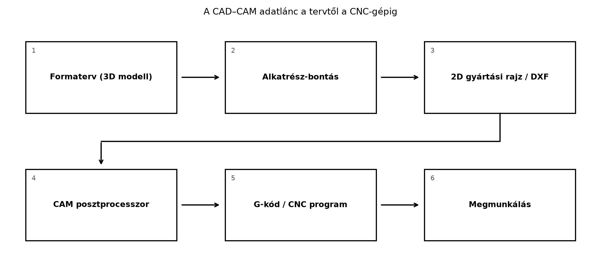

Egy konyhabútor-rendelés tervezésekor a vevő először látványtervet szeretne látni, hogy eldöntse, tetszik-e neki a szín, a fogantyú, az ajtók elrendezése. Ha csak papíron rajzolunk, a változtatás lassú: minden módosításhoz új rajz kell. Ha viszont számítógéppel, CAD-programban dolgozunk, a 3D-modellen gyorsan cserélhetjük a színeket, az ajtót vagy a méretet, és a program azonnal frissíti a nézeteket, az alkatrészlistát és a szabásjegyzéket is.
A második nehéz pillanat a gyártáskor jön: a rajzról a CNC-gép nem tud közvetlenül dolgozni. A tervből CAM-adatot kell készíteni, amely a gép nyelvén, koordinátákkal és szerszámparancsokkal írja le a megmunkálást. Ha ez a lánc helyesen épül fel, a tervtől a furatig és a szabásig kevesebb hibával, gyorsabban jutunk el. Ha bárhol elszakad az adatlánc, rossz méret, rossz furat vagy anyagpazarlás lehet a vége.
Képzeljünk el egy fiókos éjjeliszekrényt a képernyőn: a bal oldalon a 3D-modell forgatható, jobbra a 2D-s alkatrészrajzok nyílnak, alul pedig egy táblázat sorolja az alkatrészeket mérettel, anyaggal, furatokkal. Amikor a tervező a 3D-modellen kicseréli a fiókelőlapot magasabbra, a alkatrészlista sora automatikusan frissül, és a szabásoptimalizáló újrarendezi a lapra a vágási képet. Ezután egy gombnyomással exportáljuk a furatok és a körvonalak adatait a CNC-gép számára.
Az alábbi folyamatábra a teljes CAD–CAM adatláncot mutatja a tervtől a gépig:

A lépések nem varázsütésre történnek: mindegyiknél ellenőrizni kell a méretet, az anyagot és a szerszámot. A folyamatábra inkább térkép, mint automata futószalag.
CAD (Computer Aided Design) – számítógéppel segített tervezés. A faiparban két fő fajtája van: a 2D-s CAD, amely síkbeli rajzokat készít (vetület, méretezés, vonalak), és a 3D-s CAD, amely térbeli modellt épít. A 3D-modellből általában 2D-s rajzok is előállíthatók.
CAM (Computer Aided Manufacturing) – számítógéppel segített gyártás. A CAM-program a CAD-ből kapott geometriából megmunkálási pályákat számol: furatok, marások, vágások, zsebek. A CAM kimenete gépi vezérlőkód, amelyet a CNC-gép értelmez.
CAD–CAM lánc – az a folyamat, amely a tervtől a kész alkatrészig viszi a digitális adatot: tervezés → 3D-modell → alkatrészlista → 2D-rajz / DXF → CAM-pálya → posztprocesszor → CNC-program → megmunkálás. A lánc minden lépésénél meg kell őrizni a méretek és a koordináták helyességét.
Réteg (layer) – a CAD-rajz rendezési eszköze. Egy rétegre kerülnek például a körvonalak, egy másikra a méretek, egy harmadikra a furatok. A rétegeket ki-be kapcsolhatjuk, zárolhatjuk, eltérő vonalszínnel vagy vonaltípussal jeleníthetjük meg. Faipari rajzon érdemes külön rétegre tenni a kontúrt, a furatokat, a méretezést, az élzárást és a segédvonalakat.
Blokk (block) – ismétlődő rajzi elemek csoportja. Például egy köldökcsap-ábrázolás, egy vasalat szimbóluma vagy egy fogantyú nézete. A blokkot egy helyen kell módosítani, és a rajz minden előfordulásán frissül. Faipari rajzokon a vasalatok, a furatjelölések és a címkék jellemző blokkok.
DXF (Drawing Exchange Format) – rajzcsere-formátum, amely gyakran használt a CAD-programok és a gyártógépek közötti 2D-s geometria átadására. Nem szabványos, hanem egy elterjedt gyártói formátum (ellenőrizendő: a pontos verzió és a célgép által elfogadott DXF-változat). Emellett léteznek gyártói, gépspecifikus formátumok is.
Posztprocesszor – a CAM-program utolsó modulja, amely a géptől független szerszámpályát az adott CNC-gép nyelvére alakítja. Minden gépvezérlésnek megvan a maga dialektusa, ezért ugyanaz a furatpozíció más kódban jelenik meg egy asztali CNC-marónál, mint egy ipari megmunkálóközpontnál. A posztprocesszor kiválasztása ezért gépfüggő.
Szabály. A CAD-modell és a gyártási rajz akkor jó, ha a rajz minden mérete, furata és élzárása visszavezethető a 3D-modellre. Ha a 3D-modell és a 2D-rajz között ellentmondás van, a gép rossz alkatrészt gyárt.
kontur, furat, meret,
elzaras, segéd. A rétegeket színnel és
vonaltípussal különítsük el.Termék: egyszerű fiókos éjjeliszekrény. Méretek: szélesség 500 mm, mélység 400 mm, magasság 600 mm. Anyag: 18 mm vastag laminált forgácslap (a fiók oldalai 16 mm-es laminált forgácslapból). Szerkezet: két oldallap, egy fedőlap, egy fenéklap, egy hátlap (farostlemez), két polc, egy fiókelőlap, a fiók oldalai, hátlapja és belső eleje, valamint egy fiókfenék.
A 3D-modellben minden alkatrészt külön testként hozunk létre:
A 3D-összeállításban az alkatrészeket kényszerekkel illesztjük: az oldallapok párhuzamosak, távolságuk 464 mm; a fedőlap az oldallapok tetején fekszik; a fiókelőlap a fiók oldalaira illeszkedik. Az összeállítás így megmutatja, hogy a fiók becsukott állapotban szorul-e, vagy a polcok elférnek-e.
A CAD-program az alábbi szabásjegyzéket készíti (kivonat):
| Tétel | Megnevezés | Db | Anyag | Kész méret h × sz × v (mm) | Megjegyzés |
|---|---|---|---|---|---|
| 1 | Oldallap | 2 | Laminált forgácslap | 582 × 400 × 18 | 32-es furatsor, élzárás elöl |
| 2 | Fedőlap | 1 | Laminált forgácslap | 500 × 400 × 18 | élzárás 3 oldalon |
| 3 | Fenéklap | 1 | Laminált forgácslap | 464 × 400 × 18 | élzárás elöl |
| 4 | Polc | 2 | Laminált forgácslap | 464 × 380 × 18 | élzárás elöl |
| 5 | Fiókelőlap | 1 | Laminált forgácslap | 500 × 200 × 18 | élzárás 4 oldalon |
| 6 | Fiók oldallap | 2 | 16 mm laminált forgácslap | 350 × 120 × 16 | élzárás felül |
| 7 | Fiókhátlap, fiók-belső elő | 2 | 16 mm laminált forgácslap | 406 × 120 × 16 | élzárás felül |
| 8 | Fiókfenék | 1 | HDF | 430 × 350 × 3 | — |
| 9 | Hátlap | 1 | HDF | 468 × 550 × 3 | — |
Ellenőrzés: a szélességi méretek összhangja: 2 × 18 mm oldallap + 464 mm belső = 500 mm. A magassági méret: 582 mm oldallap + 18 mm fedőlap = 600 mm. A polcok állíthatók, ezért a belső szabad magasságot külön ellenőrizzük. A listát mindig a 3D-modellhez viszonyítva ellenőrizzük.
A laminált forgácslap táblamérete szabványosan 2800 × 2070 mm (tájékoztató, ellenőrizendő a beszállítónál). Az alkatrészeket ebből kell kiszabni. A szabásoptimalizáló program a táblára helyezi az alkatrészeket úgy, hogy a hulladék a lehető legkisebb legyen, figyelembe véve a fűrészvágás rést (például 4 mm) és a szálirányt.
Számítsuk ki a nettó anyagszükségletet:
A nagy alkatrészek területe (a fűrészrést most elhanyagoljuk, csak a kihozatali arányt becsüljük):
18 mm-es laminált forgácslap:
16 mm-es laminált forgácslap (külön sor, külön anyag):
HDF (3 mm): hátlap 0,468 × 0,550 = 0,2574 m², fiókfenék 0,430 × 0,350 = 0,1505 m².
Egy tábla: 2,800 m × 2,070 m = 5,796 m²
Elméleti kihozatal a 18 mm-es anyagra: $ \frac{1{,}30384}{5{,}796} \cdot 100,% = 22{,}5,% $. Ez nem hulladékarány: egyetlen éjjeliszekrényhez a tábla kb. negyede kell, a tábla többi része maradéklapként más munkához (vagy több darab egyidejű gyártásához) használható. Az optimalizáló ezért a maradéklap méretét is kiírja; kihozatalt sorozatra vagy maradéklap-kezeléssel értelmes számolni. A 16 mm-es fiókelemek külön (16 mm-es) lapból vagy maradéklapból készülnek.
A pontos számításhoz a szabásrészt is hozzá kell adni: ha minden vágás 4 mm-t vesz el, akkor a nettó méretekhez ráhagyást kell adni a szabásjegyzék nyers méreteinél. Ezt a Szabásjegyzék és anyagnorma és a Szabásterv és szabástérkép, anyagkihozatal alfejezetekben részletezzük.
A 2D-s gyártási rajzot DXF formátumban exportáljuk. A DXF-ben az alkatrész kontúrja, a furatok középpontja és átmérője, valamint a zsebek geometriája szerepel. Az export előtt ellenőrizzük:
Az ábrán az éjjeliszekrény 582 × 400 × 18 mm-es oldallapja látható (a
fedőlap az oldallapok tetején fekszik, ezért az oldallap 600 − 18 = 582
mm magas). A rétegeket vonaltípus különíti el: kontur
vastag folytonos, furat kör, meret vékony,
elzaras szaggatott. A nullpont (X0/Y0) a bal alsó
bázissarok; a CAM-ban és a gépen ugyanennek kell lennie. Jobbra lent a
négy tipikus hiba: rossz réteg, eltérő origó, robbantatlan blokk,
nyitott kontúr. A HTML-változatban a rétegek ki-be kapcsolhatók, és az
origó eltolásával látható, hova kerülnének a furatok.
Egy rövid, magyarázott fúrási programrészlet (a pontos szintaxis vezérlőfüggő, ellenőrizendő: a gép vezérlőjének dokumentációja):
; Oldallap 582 x 400 x 18 – nullpont: bal alsó bázissarok (X0 Y0), Z0 a lap felső síkja
T1 M6 ; szerszámcsere: 5 mm-es fúró a 32-es sorhoz
S4000 M3 ; orsó be, fordulatszám (szerszámadatlap szerint)
G0 X37 Y96 Z5 ; gyorsmenet az első furat fölé, 5 mm biztonsági magasságba
G81 Z-12 R2 F1500 ; fúróciklus: 12 mm mély furat, előtolás mm/min-ben
Y128 ; következő furat 32 mm-rel feljebb (a ciklus ismétlődik)
G80 G0 Z50 M5 ; ciklus vége, kiemelés, orsó leA CNC-gép CAM-programja beolvassa a DXF-et, a kezelő kiválasztja a szerszámokat (például 5 mm-es fúró, 8 mm-es maró), majd a posztprocesszor legenerálja a gépi programot. A program már koordinátákat, fordulatszámot, előtolást és szerszámcserét tartalmaz. A generált programot szimulációval ellenőrizzük, hogy ne legyen ütközés vagy rossz mélység.
Gépbiztonság. A CNC-gépen a programot csak betanított, felügyelt kezelő indíthatja. Indítás előtt ellenőrizd a munkadarab rögzítését (vákuum), a szerszámok befogását és megengedett fordulatszámát, a védőberendezéseket és a vészleállítót; az új programot először szimulációban, majd csökkentett előtolással, a gép mellett állva futtasd (ellenőrizendő: gépkönyv, MSZ EN ISO 19085 sorozat). A gép munkaterébe működés közben nem nyúlunk.
Szabvány. A CAD-adatok cseréjére nincs egyetlen kötelező faipari szabvány; a gyakorlatban a DXF formátum de facto szabvánnyá vált, de a verziószám és a célgép által elfogadott elemek eltérhetnek (ellenőrizendő: a CNC-gép gyártói dokumentációja). A hosszú távú megőrzésre a PDF/A formátum (ISO 19005 sorozat) alkalmas (ellenőrizendő: a pontos szabványszám). A termékmodell-adatok cseréjére az ISO 10303 (STEP) szolgál, de az asztalosüzemi gépek és a faipari szoftverek a gyakorlatban gyakran DXF-et vagy saját formátumot használnak. A rajzok szabványos vonalait, méretezését és rétegrendjét az MSZ EN ISO 128 és MSZ EN ISO 129 alapelvei szerint alakítjuk ki (ellenőrizendő: a hatályos szabványszámok).
A CAD-CAM láncban az ellenőrzés célja, hogy a gép ne gyártson rossz alkatrészt. Az ellenőrzési pontok:
Eltérés esetén a hibát a lánc legkorábbi pontján kell javítani: először a modellben, majd a rajzban, majd az exportban, végül a CAM-paraméterekben.
Hiba: a CNC-gép rossz helyre fúr. Ok: a DXF-exportnál a furatok másik rétegre kerültek, vagy a koordinátarendszer origója nem egyezik. Helyes gyakorlat: mindig ellenőrizzük a rétegeket és az origót; export előtt a rajzon rajzoltassuk ki a furatok középpontját.
Hiba: a generált szabásjegyzék darabszáma nem egyezik a rajzzal. Ok: a 3D-modellben egy alkatrész kétszer szerepel, vagy a blokkok beszámításra kerültek. Helyes gyakorlat: modellben minden alkatrészt egyedi, paraméterezett testként építsünk, ne blokkokból.
Hiba: a szabásoptimalizáló rosszul vág, és a táblán az alkatrészek nem férnek el. Ok: nem adtuk meg a fűrészrést vagy a tábla szegélyének levágását (ráhagyást). Helyes gyakorlat: az optimalizálóban állítsuk be a fűrészrés vastagságát, a tábla szegélyét, a szálirányt, és futtassuk újra.
Hiba: a CNC-program hibás szerszámot vagy fordulatot használ. Ok: rossz posztprocesszort választottunk. Helyes gyakorlat: mindig a gép típusának megfelelő posztprocesszort használjuk; a gépkönyvben ellenőrizzük a támogatott programnyelvet.
Egy asztalos vállalkozó bevezette a CAD-CAM munkafolyamatot, hogy konyhabútorokat gyorsabban gyártson. Kezdetben a tervező a 3D-modellből csak látványtervet készített, a gyártáshoz viszont kézzel írta az alkatrészlistát, és a CNC-gépet is kézzel programozta. Az eredmény: a látványterv és a valódi bútor méretei eltértek, mert a kézi lista nem frissült, amikor a modellben megváltozott a fiókméret. Egy reklamáció után a cég áttért arra, hogy a CAD-program automatikusan generálja a szabásjegyzéket, és a DXF-et közvetlenül a CAM-ba küldi. Az új folyamattal a tervezésről a gyártásra fordított idő a felére csökkent, és a mérethibák megszűntek. A tanulság: a CAD-modell az egyetlen igazságforrás, a többi dokumentumot abból kell származtatni.
1. feladat (A)
Fogalmazd meg saját szavaiddal a CAD és a CAM fogalmát, majd rajzold le
a CAD–CAM lánc lépéseit.
2. feladat (A)
Sorolj fel három faipari réteget, amelyet egy 2D-s műhelyrajzon
használnál, és írd le, mi kerül rájuk.
3. feladat (B)
Egy 3D-s modellből generált szabásjegyzékben az oldallap mérete 800 ×
600 × 19 mm, de a gyártási rajzon 800 × 600 × 18 mm szerepel. Mi lehet a
probléma? Hogyan ellenőriznéd?
4. feladat (B)
Számítsd ki a nettó anyagszükségletet: 4 db oldallap 700 × 500 mm, 2 db
fedőlap 900 × 550 mm, 3 db polc 650 × 450 mm. Add meg az eredményt
m²-ben, és becsüld meg, hány 2800 × 2070 mm-es tábla kell, ha a
fűrészrés miatt 10% ráhagyást számolunk.
5. feladat (C)
Egy CNC-gépre DXF-et exportálsz, de a gép a furatokat nem fúrja ki, csak
a körvonalat marja. Mi lehet az ok? Sorolj fel legalább három lehetséges
hibát, és mindegyikre add meg a javítást.
6. feladat (D)
Készíts rövid technológiai leírást (számozott lépéseket) egy 3D-s
bútormodell 2D-s gyártási rajzának előállításához. Használd a fiókos
éjjeliszekrény példáját, és írd be az ellenőrzési pontokat minden
lépéshez.
Hamis. A DXF geometriai adatokat tartalmaz, nem gépvezérlő kódot. A CNC-gép a CAM-programból posztprocesszálással előállított gépi programot futtatja.
A 2D-s CAD síkbeli rajzokat készít (vetület, méretezés); a 3D-s CAD térbeli modellt épít, amelyből 2D nézetek és szabásjegyzék is származtatható. A 3D-modell a teljes termék szerkezetét mutatja, a 2D-s rajz egy-egy nézetet vagy metszetet.
A posztprocesszor a CAM által generált általános szerszámpályát az adott CNC-gép vezérlésének nyelvére alakítja. Minden gépvezérlés eltérő dialektust használ, ezért gépfüggő.
Terület: . 20 darab: .
Rétegek: kontur (alkatrész körvonala, vágási
geometria), furat (furatok középpontja, átmérő),
meret (méretvonalak és feliratok). A rétegek segítik a
logikai csoportosítást, a megjelenítést és a gyártási adatok (pl.
furatok) exportálását.
A nettó anyag 4,2 m², egy tábla területe 5,796 m², tehát elméletileg 1 tábla elég lenne, ha a kihozatal 100% lenne, de a fűrészvágások, a szálirány és a darabok elrendezése miatt szükséges lehet 2 tábla. A 3 tábla viszont már anyagpazarlást jelez, vagy rosszul adtuk meg a darabokat / ráhagyást.
1. feladat (A)
CAD: számítógéppel segített tervezés, amely 2D-s rajzot vagy 3D-s
modellt hoz létre. CAM: számítógéppel segített gyártás, amely a
CAD-geometriából megmunkálási pályát és gépi kódot készít. A lánc:
tervezés → 3D-modell → alkatrészlista → 2D-rajz / DXF → CAM-pálya →
posztprocesszor → CNC-program → megmunkálás.
2. feladat (A)
Lehetséges válasz:
- kontur: az alkatrész külső és belső körvonalai, vágási
geometria.
- furat: furatok középpontja, átmérője, mélysége.
- elzaras: élzáró anyag jelölése, pl. az élzárás vastagsága
és anyaga.
Ezek segítenek a rajz áttekinthetőségében és a gyártási adatok
exportálásában.
3. feladat (B)
Valószínűleg a 3D-modellben a lapvastagság 19 mm-re van paraméterezve,
míg a rajzon kézzel átírták 18 mm-re, vagy a rajz sablonja 18 mm-ben
rögzítve van. Ellenőrzés: nyisd meg a 3D-modellt, nézd meg az alkatrész
vastagság-paraméterét; hasonlítsd össze a szabásjegyzék nyers és kész
méretét. Ha a modellben 19 mm szerepel, akkor a rajz a hibás, javítsd a
modellt vagy a rajzgenerálást. A vastagság eltérés a bútor illesztésénél
problémát okoz.
4. feladat (B)
Számolás:
- Oldallap: 0,7 × 0,5 = 0,35 m², 4 db → 1,40 m²
- Fedőlap: 0,9 × 0,55 = 0,495 m², 2 db → 0,99 m²
- Polc: 0,65 × 0,45 = 0,2925 m², 3 db → 0,8775 m²
- Nettó összesen: 1,40 + 0,99 + 0,8775 = 3,2675
m²
10% ráhagyással:
.
Egy tábla: 5,796 m². A szükséges táblaszám:
,
tehát 1 tábla elvileg elegendő. Az optimalizálónál ellenőrizni kell,
hogy a darabok hogyan férnek el a táblán a vágásréssel és a
száliránnyal.
5. feladat (C)
Lehetséges okok és javítások:
- A furatok nem kerültek a megfelelő rétegre, ezért a CAM nem ismerte
fel fúrásként. Javítás: tedd a furatokat külön furat
rétegre, és ellenőrizd a CAM beállításait.
- A DXF-exportnál a furatjelek (körök) kimaradtak, mert a rajzon
blokkként szerepeltek, és a blokk nem lett felrobbantva. Javítás:
robbantsd fel a blokkokat exportálás előtt.
- A CAM-ban a megmunkálási művelet rossz, pl. a furat helyett
kontúrmarást választottál. Javítás: a furat műveletet válaszd, és
rendeld hozzá a fúrószerszámot.
- A posztprocesszor nem támogatja a fúrási ciklust, ezért marásként
értelmezi. Javítás: ellenőrizd a posztprocesszort, vagy használj más,
fúrást támogató stratégiát.
6. feladat (D)
Technológiai leírás a 2D-s gyártási rajz előállításához a fiókos
éjjeliszekrény példáján:
furat rétegre, a kontúrt a
kontur rétegre. – Ellenőrzés: a rétegek
ki-be kapcsolásával a furatok megjelennek.A CAD (számítógéppel segített tervezés) és a CAM (számítógéppel segített gyártás) összekapcsolásával a tervtől a CNC-gépig egy adatlánc vezet. A folyamat lépései: 3D-modell → alkatrészlista → 2D-rajz / DXF → CAM-pálya → posztprocesszor → CNC-program → megmunkálás. A CAD-rajzok rétegekbe szervezik a kontúrokat, furatokat, méreteket és élzárásokat; a blokkok az ismétlődő elemeket fogják össze. A faipari célszoftverek a 3D-modellből szabásjegyzéket és látványtervet generálnak, az optimalizáló programok pedig a táblára rendezik az alkatrészeket, csökkentve a hulladékot. Az adatátvitel gyakori formátuma a DXF, de a gép csak a saját vezérlőnyelvén dolgozik, ezért szükséges a CAM-posztprocesszor. A lánc minden lépésénél ellenőrizni kell a méreteket, rétegeket és szerszámokat. Továbbvitt eredmény: ezt a CAD–CAM láncot használja a CNC-technika: vezérlés, koordináta-rendszer, megmunkálóközpont, programfelépítés alfejezet, amikor a megmunkálóközpont vezérlését és a programfelépítést mutatja be.
A fejezet a CAD-CAM alapfogalmakra, a hazai faipari gyakorlatra és a gyártói dokumentációk elveire épül. Ellenőrizendő: a DXF-verzió és a célgép által elfogadott formátum, a PDF/A szabványsorozat pontos száma, a CNC-gép posztprocesszorának elérhetősége és a gyártói CAM-beállítások. A szabásoptimalizálási példában szereplő táblaméret, fűrészrés és kihozatali értékek tanulási példák, a tényleges gyártás előtt a beszállító adatlapját és a gépkönyvet kell ellenőrizni. A fiókos éjjeliszekrény méretei és alkatrészlistája minta, nem tervezési előírás.